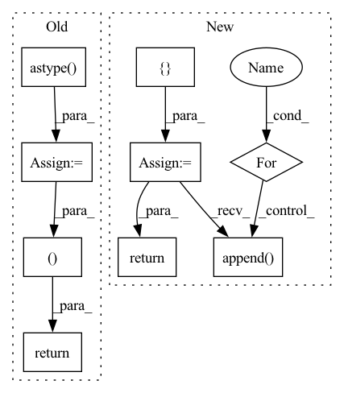

Pattern ID :468
Before Change
up = np.random.rand(N, 1)
if sparse_variables_1 > 0:
if sparse_variables_1 < 1:
sparse_variables_1 = np.ceil(sparse_variables_1 * N).astype( "int")
up[np.random.choice(np.arange(N), N - sparse_variables_1, replace=False)] = 0
vp = np.random.rand(M, 1)
if sparse_variables_2 > 0:
if sparse_variables_2 < 1:
sparse_variables_2 = np.ceil(sparse_variables_2 * M).astype("int")
vp[np.random.choice(np.arange(M), M - sparse_variables_2, replace=False)] = 0
gaussian_x = np.random.normal(0, eps, (m, N))
gaussian_y = np.random.normal(0, eps, (m, M))
X = np.outer(z, up)
Y = np.outer(z, vp)
X += gaussian_x
Y += gaussian_y
return X, Y, up, vp
def _OH_digits(digits):
b = np.zeros((digits.size, digits.max() + 1))After Change
z = np.random.normal(0, 1, n)
views = []
true_features = []
for p, sparsity in zip(view_features, view_sparsity):
weights = np.random.rand(p, 1)
if sparsity > 0:
if sparsity < 1:
sparsity = np.ceil(sparsity * p).astype("int")
weights[np.random.choice(np.arange(p), p - sparsity, replace=False)] = 0
gaussian_x = np.random.normal(0, eps, (n, p))
view = np.outer(z, weights)
view += gaussian_x
views.append(view)
true_features.append( weights)
return views, true_features
class CCA_Dataset(Dataset):In pattern: SUPERPATTERN
Frequency: 3
Non-data size: 9
Instances Fragment ID: 2482805
Project Name: jameschapman19/cca_zoo
Commit Name: 6e0c61ce1ab34a95c67f794aefa73814ef633df0
Time: 2021-04-27
Author: james.chapman.19@ucl.ac.uk
File Name: cca_zoo/data.py
M Class Name: AnonimousClass
N Class Name: AnonimousClass
M Method Name: generate_simple_data(4)
N Method Name: generate_simple_data(6)
M Parent Class:
N Parent Class:
M File Name: cca_zoo/data.py
N File Name: cca_zoo/data.py
M Start Line: 327
M End Line: 361
N Start Line: 98
N End Line: 123
Before Change
documents_imgs, documents_names = prepare_pdf_documents(
filepaths=filepaths, num_pixels=num_pixels)
shapes = [[page.shape[:2] for page in doc] for doc in documents_imgs]
raw_images = [[page.astype( np.float32) .flatten().tostring() for page in doc] for doc in documents_imgs]
return shapes, raw_images, documents_names
def prepare_pdf_documents(
filepaths: List[str] = None,After Change
documents_imgs = []
documents_names = []
for f_document in filepaths:
pages_imgs, pages_names = prepare_pdf_from_filepath(
f_document, num_pixels=num_pixels
)
documents_imgs.append(pages_imgs)
documents_names.append( pages_names)
documents_shapes = [[page.shape[:2] for page in doc] for doc in documents_imgs]
return documents_imgs, documents_names, documents_shapes
def prepare_pdf_from_filepath( Fragment ID: 2482804
Project Name: mindee/doctr
Commit Name: b21c2d4c09a505cbc99514c2c265fc6a1e66c614
Time: 2021-01-18
Author: charles@mindee.co
File Name: doctr/documents/reader.py
M Class Name: AnonimousClass
N Class Name: AnonimousClass
M Method Name: read_documents(2)
N Method Name: read_documents(2)
M Parent Class:
N Parent Class:
M File Name: doctr/documents/reader.py
N File Name: doctr/documents/reader.py
M Start Line: 28
M End Line: 33
N Start Line: 34
N End Line: 48
Before Change
labels = [[item[1]] for item in batch]
values = np.concatenate(values, axis=0).astype(_DTYPE)
values = torch.from_numpy(values)
labels = np.concatenate(labels, axis=0).astype( _DTYPE)
labels = torch.from_numpy(labels)
return values, labels
def intervals_iou(itv_a:Tensor, itv_b:Tensor, iou_type="iou") -> Tensor:
NOT finished, NOT checked,After Change
n_fields = len(batch[0])
except:
raise ValueError("No data")
ret = []
for i in range(n_fields):
values = [[item[i]] for item in batch]
values = np.concatenate(values, axis=0).astype(_DTYPE)
values = torch.from_numpy(values)
ret.append( values)
return tuple(ret)
def intervals_iou(itv_a:Tensor, itv_b:Tensor, iou_type="iou") -> Tensor: Fragment ID: 2482803
Project Name: deeppsp/torch_ecg
Commit Name: ee05a1edb7783d4928b0eea028455c71eb1fe050
Time: 2021-10-14
Author: wenh06@gmail.com
File Name: torch_ecg/utils/utils_nn.py
M Class Name: AnonimousClass
N Class Name: AnonimousClass
M Method Name: default_collate_fn(1)
N Method Name: default_collate_fn(1)
M Parent Class:
N Parent Class:
M File Name: torch_ecg/utils/utils_nn.py
N File Name: torch_ecg/utils/utils_nn.py
M Start Line: 515
M End Line: 521
N Start Line: 513
N End Line: 523